Durch die Hölle
Wahre Kriminalfälle
Bernd Hesse
Durch die Hölle – Wahre Kriminalfälle
Verlag Das Neue Berlin, Berlin 2019
Mit Durch die Hölle – Wahre Kriminalfälle setzte Bernd Hesse die mit Die Hinrichtung begonnene Reihe authentischer Kriminalfälle im Verlag Das Neue Berlin fort. Wieder stammen die Geschichten aus der unmittelbaren Nähe strafrechtlicher Praxis. Doch geht es nicht allein um Tat, Ermittlung und Urteil.
Hesse folgt den Lebenswegen der Beteiligten und fragt danach, wie Menschen in Situationen geraten, an deren Ende eine Strafakte steht. Das Buch führt dabei vom scheinbar geordneten Alltag „ganz normaler Bürger“ bis in die Welt organisierter Kriminalität und des Rotlichtmilieus.
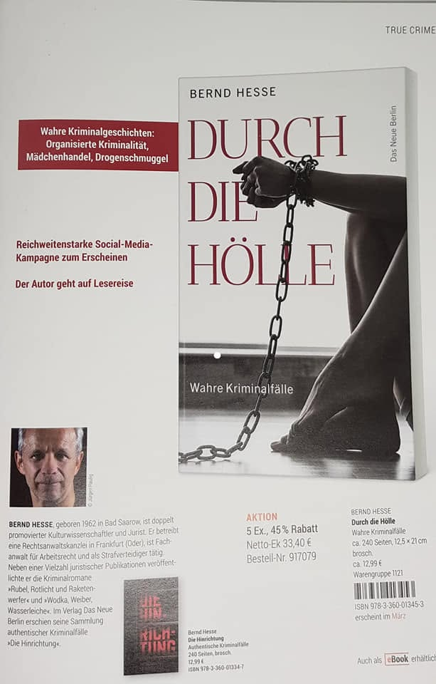
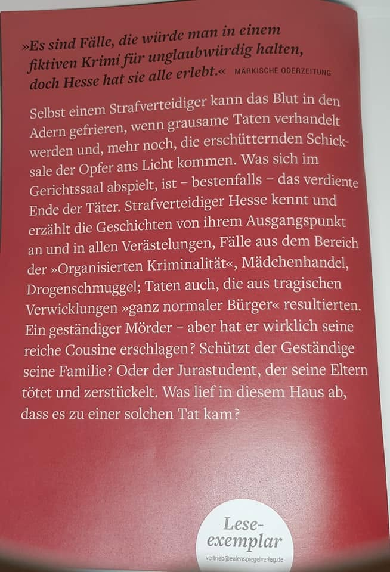
Der Band versammelt drei große Geschichten: „Sieben Leben“, „Der Jurastudent, der seine Eltern zerstückelte“ und die titelgebende Geschichte „Durch die Hölle“.
Sieben Leben
Schon die erste Geschichte zeigt, dass ein tatsächlicher Kriminalfall sehr viel komplizierter sein kann als die knappe Bezeichnung einer Tat. Eine ältere Frau wird von einem Verwandten angegriffen. Der Täter glaubt zeitweilig, sie bereits getötet zu haben, versucht die vermeintliche Leiche zu beseitigen – und gerade die weiteren Handlungen führen schließlich zum Tod.
Für den Strafverteidiger stellt sich damit eine ungewöhnliche Frage: Wie sind mehrere aufeinanderfolgende Handlungen strafrechtlich zu beurteilen, wenn sich die Vorstellung des Täters über Leben und Tod seines Opfers während des Geschehens verändert?
Gerade solche Fälle zeigen den besonderen Blickwinkel des Buches: Nicht die spektakuläre Tat allein interessiert, sondern das, was anschließend im Strafverfahren aus ihr wird – Geständnis, Beweisaufnahme, Verteidigungsstrategie und die juristische Bewertung eines Geschehens, das sich nicht ohne Weiteres in ein einfaches Schema pressen lässt.
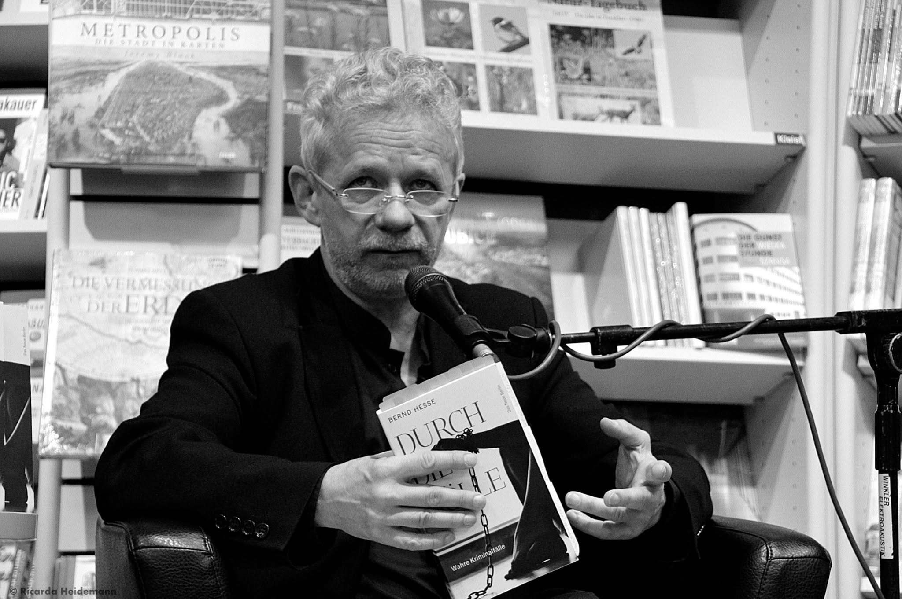
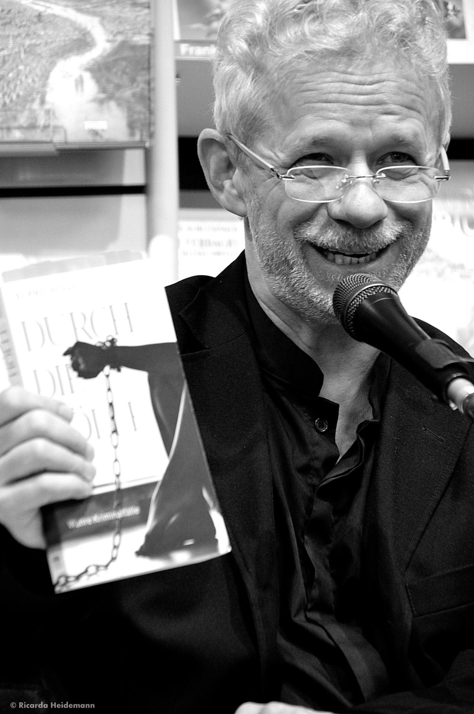
Die Buchpremiere fand in der Buchhandlung Ulrich von Hutten in Frankfurt (Oder) statt. Sie bildete den Auftakt zu zahlreichen Veranstaltungen, bei denen Bernd Hesse aus dem Band las und zugleich über die Hintergründe der Fälle und die Arbeit eines Strafverteidigers berichtete.
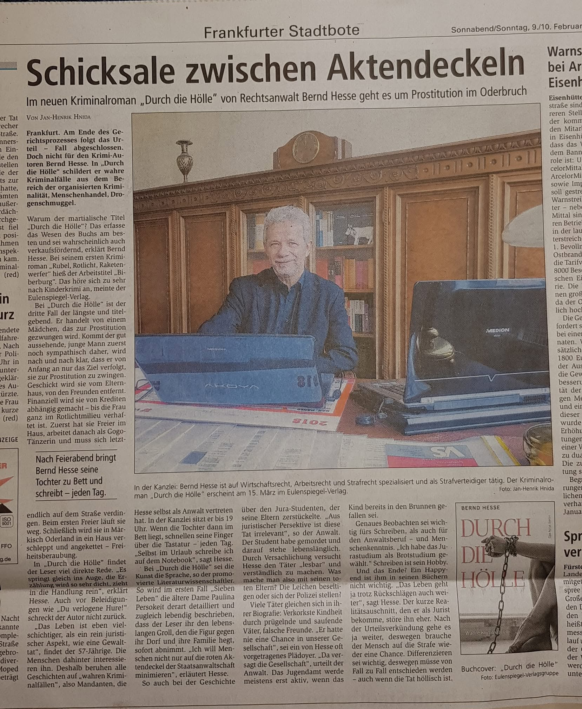
Auch die Presse nahm das Erscheinen zum Anlass, nicht nur das Buch, sondern den Strafverteidiger und Schriftsteller an seinem Arbeitsplatz vorzustellen. Der Titel „Schicksale zwischen Aktendeckeln“ trifft dabei einen wesentlichen Gedanken dieser Bücher: Hinter den Akten stehen Menschen und Lebensgeschichten.
Der Jurastudent, der seine Eltern zerstückelte
Die zweite große Geschichte führt besonders tief in eine familiäre Tragödie. Ein hochintelligenter Jurastudent tötet seine Eltern und zerstückelt anschließend deren Leichen. Hinter der zunächst kaum fassbaren Tat wird im Prozess eine Familie sichtbar, die über Jahre immer stärker in Isolation geraten war.
Der psychiatrische Sachverständige beschreibt eine geradezu festungsartige Abschottung gegenüber einer als feindlich empfundenen Außenwelt. Gefühle werden kaum gezeigt, Kommunikation und soziale Kontakte verkümmern. Nachbarn schildern später ein Familienleben, das wie ein Leben in einem Gefängnis gewirkt habe.
Damit erzählt das Kapitel nicht nur von einem Doppelmord. Es fragt danach, welche Vorgeschichte einer solchen Tat vorausgeht und was ein Strafprozess über familiäre Strukturen sichtbar machen kann, die Außenstehenden zuvor weitgehend verborgen geblieben waren.
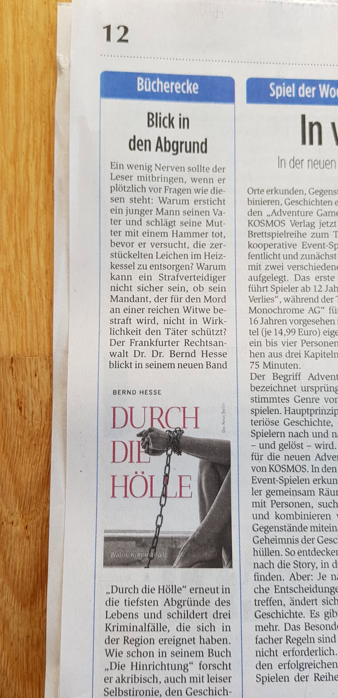
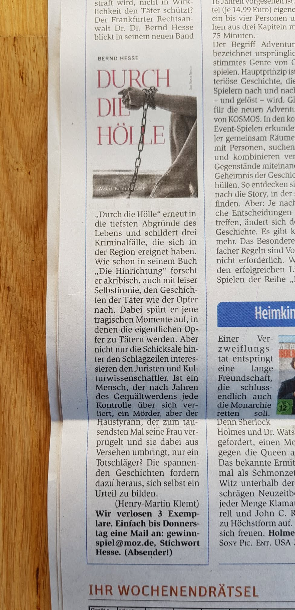
Das Buch fand auch außerhalb klassischer Rezensionen Beachtung. Der Schriftsteller Henry-Martin Klemt empfahl den Band. Gerade solche Reaktionen lenkten den Blick darauf, dass diese Texte zwar aus der Welt des Strafrechts stammen, zugleich aber Geschichten über Menschen in extremen Lebenssituationen erzählen.
„Durch die Hölle“ – die titelgebende Geschichte
Den größten Raum nimmt schließlich die Geschichte ein, die dem gesamten Buch seinen Titel gibt. Sie beginnt bemerkenswerterweise im alltäglichen Kanzleibetrieb: mit einem Gerichtsbeschluss über die Bestellung Bernd Hesses zum Zeugenbeistand. Aus diesem zunächst unspektakulären anwaltlichen Auftrag entwickelt sich der Blick in eine ganz andere Welt.
Im Mittelpunkt steht die junge Nancy. Ihr Weg führt immer tiefer in das Rotlichtmilieu und schließlich in die Abhängigkeit von Menschen, die ihre Verletzlichkeit ausnutzen. Was zunächst wie das Versprechen von Freiheit, Liebe und Selbstbestimmung erscheint, wird zur Falle.
Die Geschichte führt weiter zu Zuhälterei, Freiheitsberaubung und Ermittlungen gegen Personen aus dem Umfeld organisierter Kriminalität. Später werden Erkenntnisse des Falles auch für weitergehende Ermittlungen des Landeskriminalamtes Berlin genutzt.
Gerade hier erklärt sich der Titel Durch die Hölle: Das Strafverfahren bildet nur einen Ausschnitt einer viel längeren Geschichte von Abhängigkeit, Gewalt und dem Versuch, das eigene Leben wieder in die Hand zu bekommen.
Im Fernsehen
Eine besondere Resonanz erfuhr das Buch im Fernsehen. In der rbb-Sendung „Täter – Opfer – Polizei“ wurde nicht allein Durch die Hölle vorgestellt. Bernd Hesse berichtete zugleich als Strafverteidiger über seine Arbeit und über die tatsächlichen Fälle hinter seinen Büchern.
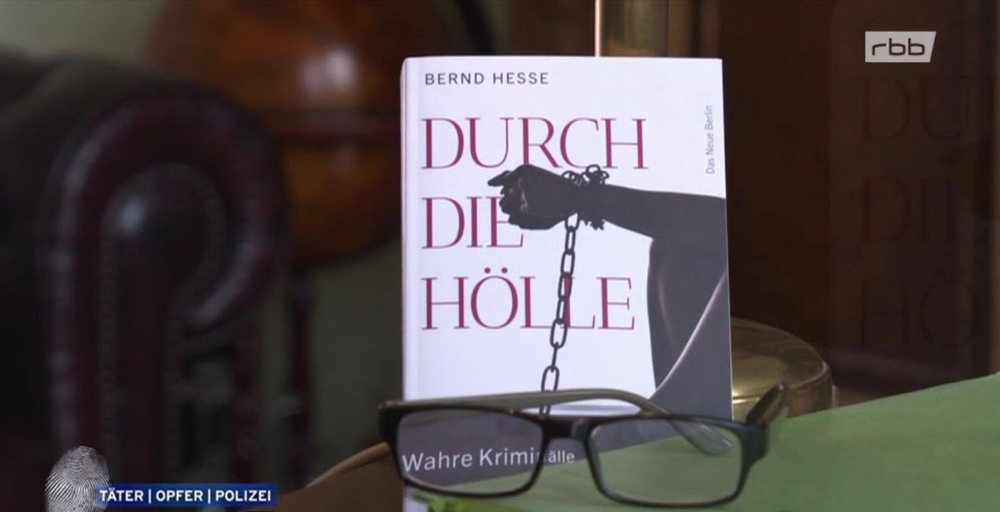
Auch bei „zuhause in berlin & brandenburg“ wurde das Buch einem größeren Fernsehpublikum präsentiert. Damit rückte immer stärker jene Verbindung in den Mittelpunkt, die die Reihe prägt: die unmittelbare Erfahrung aus der Strafverteidigung und ihre literarische Verarbeitung.
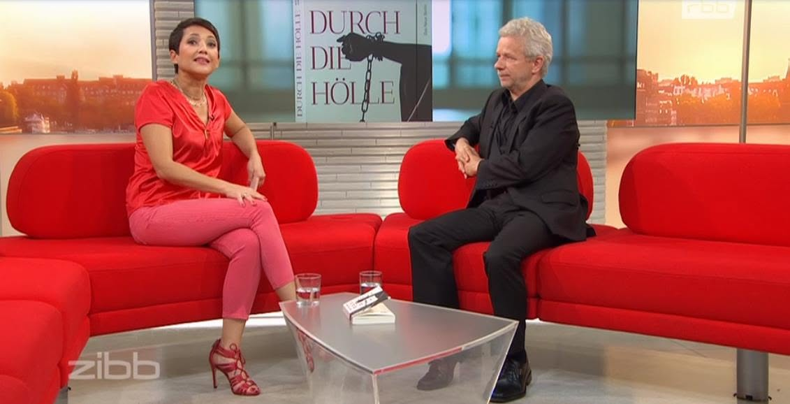
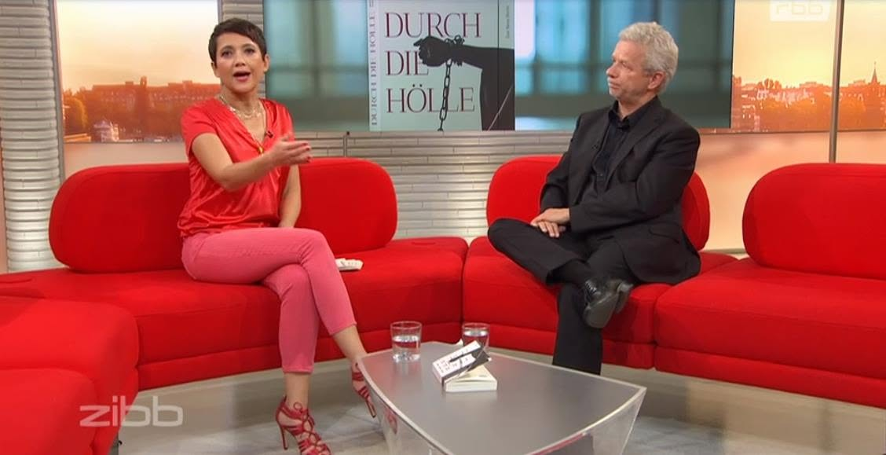
Ein Buch auf Reisen
Vor allem aber wurde Durch die Hölle zu einem Buch der Begegnung mit den Leserinnen und Lesern. Bernd Hesse stellte es bei Dutzenden Lesungen in Buchhandlungen, Bibliotheken und anderen Kultureinrichtungen vor.
Viele davon waren Häuser, in denen er regelmäßig zu Gast ist – darunter die Stadt- und Regionalbibliothek Frankfurt (Oder), die Ulrich-Plenzdorf-Bibliothek in Seelow sowie Berliner Bibliotheken. Die hier gezeigten Bilder können deshalb nur einige Beispiele aus der großen Zahl der Veranstaltungen dokumentieren.
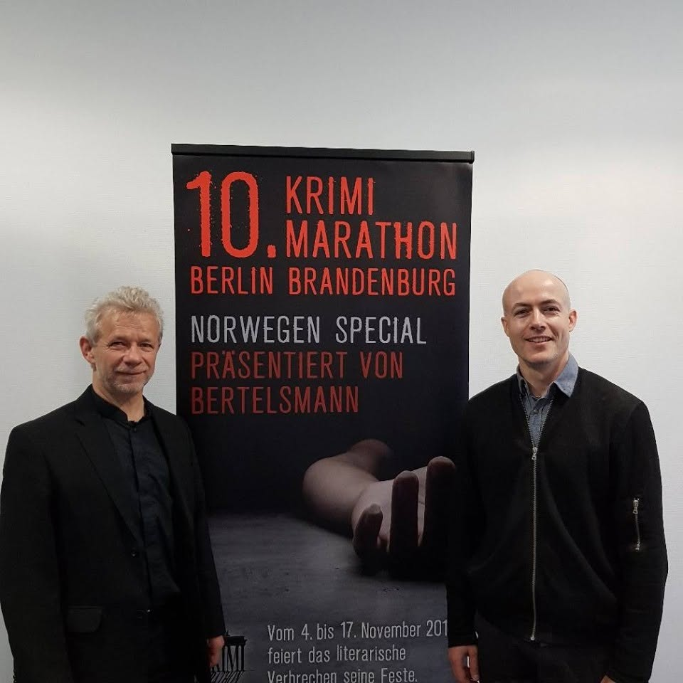
Eine der zahlreichen Stationen war der 10. Krimi-Marathon in Berlin. Auch dort verband die Lesung Passagen aus dem Buch mit Einblicken in die Hintergründe der tatsächlichen Strafverfahren.
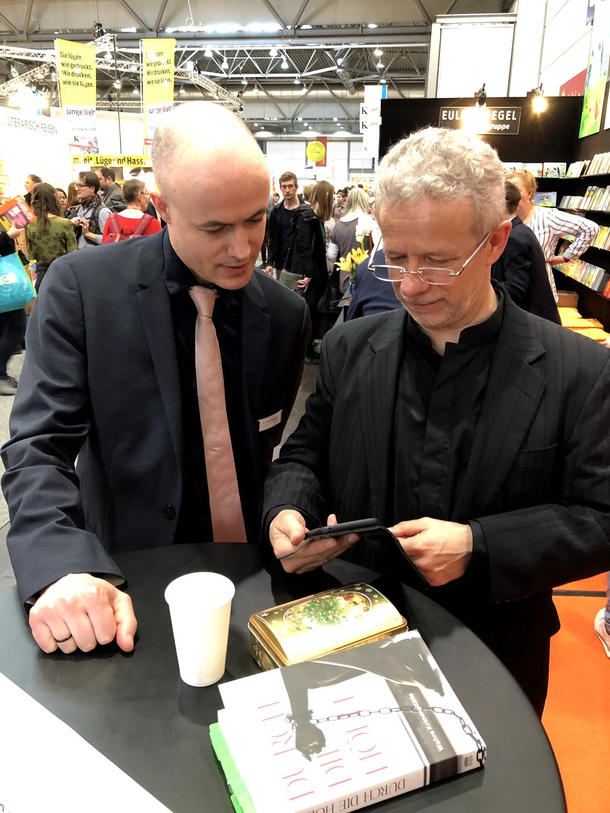
Auf der Leipziger Buchmesse begegnete Bernd Hesse seinen Leserinnen und Lesern bei Signierstunden und Gesprächen über das Buch.
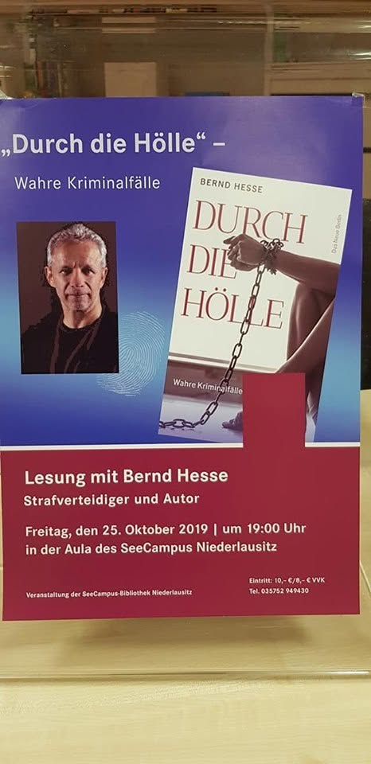
Auch die Lesung im SeeCampus Niederlausitz steht exemplarisch für die zahlreichen Veranstaltungen. Bei diesen Abenden ging es regelmäßig um mehr als das Vorlesen einzelner Passagen: Die tatsächlichen Fälle eröffneten Gespräche über Schuld und Strafe, Täter und Opfer, die Tätigkeit des Strafverteidigers und darüber, was sich hinter der oft nüchternen Sprache einer Gerichtsakte verbirgt.
Durch die Hölle wurde damit nicht nur die Fortsetzung der Reihe authentischer Kriminalfälle. Das Buch führte Bernd Hesse zu zahlreichen Lesungen, Gesprächen und Fernsehauftritten und brachte einem breiten Publikum jene Geschichten nahe, die gewöhnlich hinter den Türen von Kanzleien und Gerichtssälen verborgen bleiben.